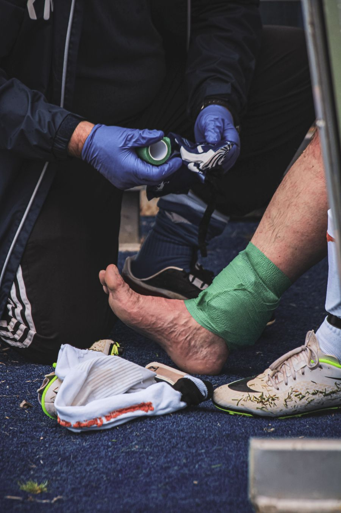
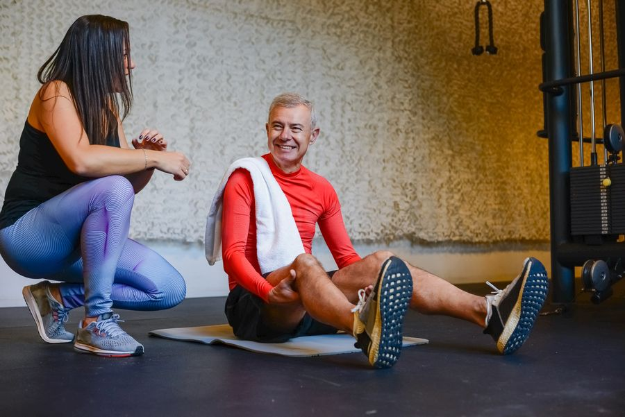
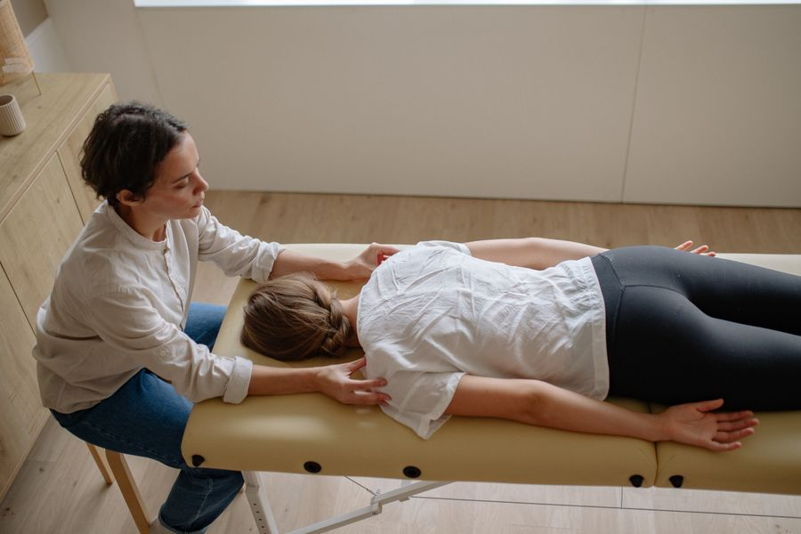
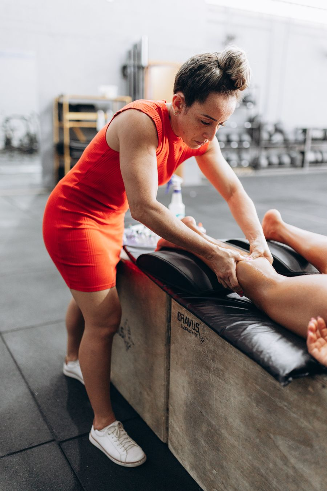

Áreas de Atuação
SERVIÇOS ESPECIALIZADOS
Fisioterapia, Osteopatia, Quiropraxia, Acupuntura, Recovery e Treinamento de Performance — protocolos desenhados pro seu corpo, do diagnóstico ao resultado.
Fisioterapia, Osteopatia, Quiropraxia, Acupuntura, Recovery e Treinamento de Performance — protocolos desenhados pro seu corpo, do diagnóstico ao resultado.
Foca em músculos, ossos e articulações, tratando tendinites, fraturas, dores na coluna e casos de pré/pós-operatório com protocolos baseados em evidências científicas.

Voltada para atletas e praticantes de exercícios, com foco em recuperação rápida de lesões e prevenção — pra você voltar a treinar com segurança e no seu melhor nível.

Direcionada para o envelhecimento saudável — melhora a força, o equilíbrio e a autonomia dos idosos, prevenindo quedas e preservando qualidade de vida.
Acupuntura, ventosaterapia e moxabustão para tratar dor e desequilíbrios energéticos, integrando técnicas milenares ao tratamento fisioterapêutico moderno.

Manipulação da coluna vertebral e equilíbrio do corpo. Abordagens manuais que avaliam e tratam disfunções da coluna vertebral e do sistema musculoesquelético, promovendo melhora da mobilidade, redução da dor e equilíbrio do organismo — restaurando o movimento adequado das articulações e otimizando a função do sistema nervoso.

Conjunto de técnicas que aceleram a recuperação muscular, reduzem dores e melhoram o desempenho físico com segurança — banheira de gelo controlada + compressão pneumática (perneiras Normatec).
Treino planejado de acordo com a modalidade, objetivos e necessidades individuais do atleta — visando melhorar rendimento, prevenir lesões e otimizar resultados.
Onde a experiência se concentra — visão geral das áreas de atuação e distribuição de atendimentos.
Fale direto comigo pelo WhatsApp e monte, junto, o plano ideal pro seu objetivo.